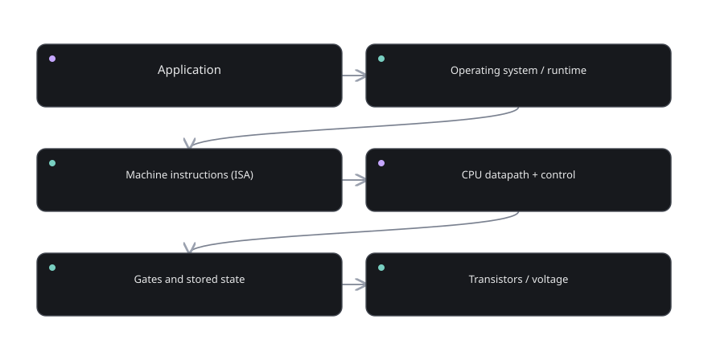

An illustrated, first-principles engineering blog
How computers work.
From a single bit to an entire processor.
Start with absolutely nothing: no processor, no memory, no instructions. Build the ideas one at a time until a machine can store information, add numbers, make choices, run programs, and control real hardware.
VOLTAGE → BITS → GATES → MEMORY → CPU → CODE
First, see the entire journey.
We never jump straight to complicated chips. Every new component solves a problem the previous component could not solve.

At every stage, ask only three questions: What information enters? What rule changes it? Where does the result go? These questions make even a sophisticated processor approachable.
Your learning route
Read each part in order, or open one concept when curiosity strikes. Every lesson has a diagram, plain-language explanation, one mental walkthrough, a misconception to avoid, and a checkpoint to test your understanding.
From electricity to information
Begin with the physical signal, and discover why a simple yes/no distinction changes everything.
06 lessons · diagrams · checkpoints → PART 02 / 12Numbers made from bits
Learn to see patterns such as 101101 as structured values rather than mysterious strings.
06 lessons · diagrams · checkpoints → PART 03 / 12Arithmetic, signs, and overflow
Build the mathematics that later becomes a physical arithmetic circuit.
06 lessons · diagrams · checkpoints → PART 04 / 12Logic gates and decisions
Turn Boolean rules into circuits that can genuinely select and calculate.
06 lessons · diagrams · checkpoints → PART 05 / 12From gates to an ALU
Make an actual computing block, then extend it to do several operations.
06 lessons · diagrams · checkpoints → PART 06 / 12Memory of a single bit
Cross the gap between circuits that react now and circuits that remember later.
06 lessons · diagrams · checkpoints → PART 07 / 12RAM, ROM, and moving data
Understand where bits wait, how they are addressed, and how they move.
06 lessons · diagrams · checkpoints → PART 08 / 12Assembling a CPU datapath
Join the calculator, memory, counters, and communication lines into one machine.
06 lessons · diagrams · checkpoints → PART 09 / 12Instructions and control
Define a tiny processor language and make every instruction physically executable.
06 lessons · diagrams · checkpoints → PART 10 / 12Programs on a tiny CPU
Write and trace full programs so the components become a real computing system.
06 lessons · diagrams · checkpoints → PART 11 / 12From toy CPU to real ARM
Connect educational building blocks to an actual processor family and external hardware.
06 lessons · diagrams · checkpoints → PART 12 / 12The wider computer system
Understand what was deliberately simplified and how a modern computer grows from the same ideas.
06 lessons · diagrams · checkpoints →Learn by changing the machine
Reading explains what should happen. Interactive laboratories let you test it: toggle a bit, choose a logic gate, generate carries, clock a register, edit RAM, and step through instructions. You can also open the large practice library for hundreds of solved variations.